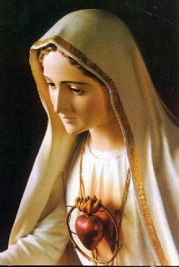
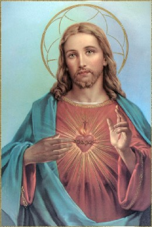
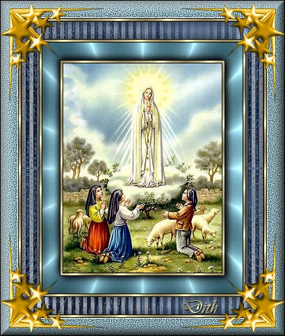

"POR FIM, O MEU IMACULADO CORAÇÃO TRIUNFARÁ"
Na Mensagem de Fátima, além da riqueza
de recomendações Divina, contém previsões 
E relembrando, foram muitos os conselhos e as orientações que a MÃE DE DEUS nos ensinou: “Sacrificai-vos pelos pecadores e dizei muitas vezes, sempre que fizerdes algum sacrifício: Ó JESUS é por Vosso Amor, pela conversão dos pecadores e em reparação pelos pecados cometidos contra o Imaculado Coração de Maria”.
A nossa oração e os sacrifícios, unidos à oração e ao sacrifício de JESUS, completam o que falta à Sua Obra Redentora, ou seja, aquilo que corresponde a nossa parte (a parte da humanidade) na Obra Redentora de JESUS, como membros que somos do Corpo Místico de CRISTO. Esta realidade nos convida a conduzir com fé, paciência e muito amor, o peso de nossa cruz, das dificuldades e dos problemas que ocorrem no cotidiano, dizendo as palavras que NOSSA SENHORA nos ensinou, porque elas representarão o nosso empenho e a plena disponibilidade em aceitar a nossa cruz e ajudar o irmão que necessita. O CRIADOR receberá o nosso esforço e dedicação, cujos benefícios serão revertidos em primeiro lugar para aqueles que rezam e suplicam, e depois, beneficiarão a humanidade que não reza e que não se lembra de agradecer ao SENHOR pelas graças que diariamente recebe e pelo dom da própria vida.
Irmã Lúcia falou: NOSSA SENHORA percebendo que o Seu pedido não iria ser atendido, continuou dizendo: “Se atenderem a Meus pedidos, a Rússia se converterá e terão paz; senão, espalhará os seus erros pelo mundo, promovendo guerras e perseguições à Igreja. Os bons serão martirizados, o Santo Padre terá muito que sofrer e várias nações serão aniquiladas”.

Então é necessário entender a explicação da Irmã Lúcia: “Esta promessa de paz, refere-se às guerras promovidas em todo o mundo, pelos erros espalhados pela Rússia”. A mencionada Consagração, solicitada por NOSSA SENHORA, foi feita pelo Santo Padre o Papa João Paulo II, em Roma, publicamente, no dia 25 de Março de 1984, diante da imagem de NOSSA SENHORA, aquela mesma que se venera na Capelinha das Aparições na Cova da Iria, em Fátima. Sua Santidade escreveu a todos os Bispos do mundo, marcando a hora e a data do acontecimento, objetivando que todos juntos, naquele mesmo horário, fizessem a Consagração solicitada pela MÃE DE DEUS.
A Irmã Lúcia relembra como o mundo estava naquela época: “A humanidade atravessava momentos críticos de sua história, em que as grandes potências, hostis entre si, projetavam e se preparavam para uma guerra nuclear, que viria destruir o mundo em sua totalidade ou na maior parte, e o que sobrasse, quais seriam as suas possibilidades de sobrevivência”? A Irmã continua com seu raciocínio: “E quem seria capaz de demover aqueles homens arrogantes, entrincheirados nos seus planos e nos projetos de guerra, nas suas idéias violentas, nas suas ideologias ateias, escravizadoras e dominadoras, acreditando serem os senhores do mundo? Quem, senão DEUS foi capaz de atuar naquelas inteligências e naquelas consciências, de modo a levá-las a uma mudança radical, sem medo, sem receio de revoltas contrárias dos seus patrícios e dos estrangeiros? Só mesmo a força de DEUS! E ela se manifestou invisível mas decisiva, atuando sobre todos eles, levando-os a aceitar sem revoltas, sem oposições e sem condições, a paz que veio a reinar, não permitindo que acontecesse a guerra”!
Recordando ela disse: “E mais ainda, um dos principais chefes do comunismo ateu foi a Roma encontrar-se com o Santo Padre – talvez, sem que ele soubesse, Sua Santidade acabava de fazer a Consagração da Rússia ao Coração Imaculado de Maria, pedido por NOSSA SENHORA em Fátima – reconhecendo-o como supremo representante de DEUS, NOSSO SENHOR JESUS sobre a Terra, chefe da única e verdadeira Igreja fundada por CRISTO, para lhe dar o abraço da paz, pedindo perdão pelos erros de seu partido. Quem seria capaz, a não ser DEUS de demolir assim uma potência que se considerava a senhora do mundo”?
A Irmã Lucia ainda relembra as palavras com que NOSSA SENHORA concluiu a sua Mensagem: “E será concedido ao mundo algum tempo de paz”.
Como já afirmei, esta promessa se refere às guerras promovidas em todo o mundo, pelo comunismo ateu que tentava estender os seus tentáculos sobre todas as nações. E assim, é sobre aquelas guerras que a VIRGEM MARIA disse que o Seu Imaculado Coração ia triunfar. E de fato tudo isto aconteceu para perplexidade do mundo e alegria de todos nós que cremos e a amamos.
Irmã Lucia ainda inseriu no seu livro, outros títulos de Apelos que encontrou na Mensagem, mas que não inserimos aqui, apenas com a intenção de resumir o texto. Todavia, distribuímos o conteúdo principal dos mesmos, nos títulos de Apelos que apresentamos nestas páginas Web.
Por último, não é difícil perceber que todo o sentido da Mensagem de Fátima constitui um Apelo sonoro e irresistível ao coração da humanidade, a fim de que as pessoas no viver cotidiano, transitem pela estrada que conduz ao Céu, que busquem um caminho para a sua conversão colocando em prática os ensinamentos e as recomendações Divinas, porque somente assim o cristão conseguirá viver em plenitude e alcançará felicidade nesta vida, e um dia, desfrutará de sua morada definitiva que o SENHOR reservou e preparou para cada filho fiel na eternidade.
